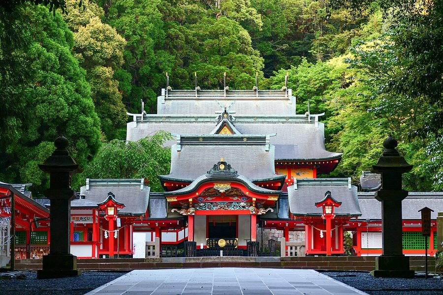
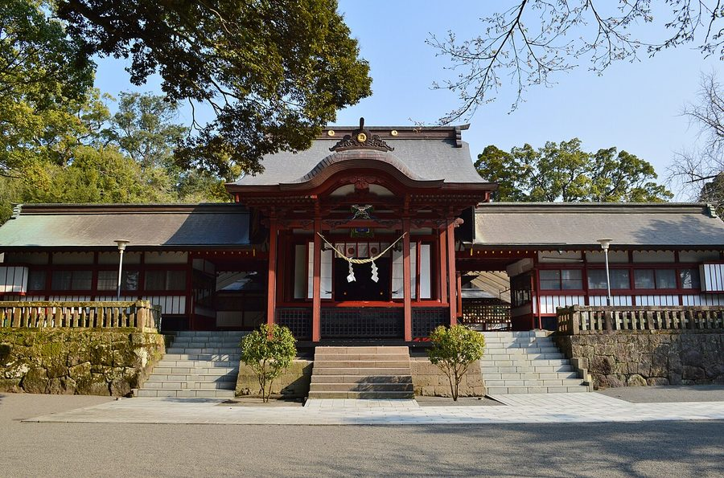
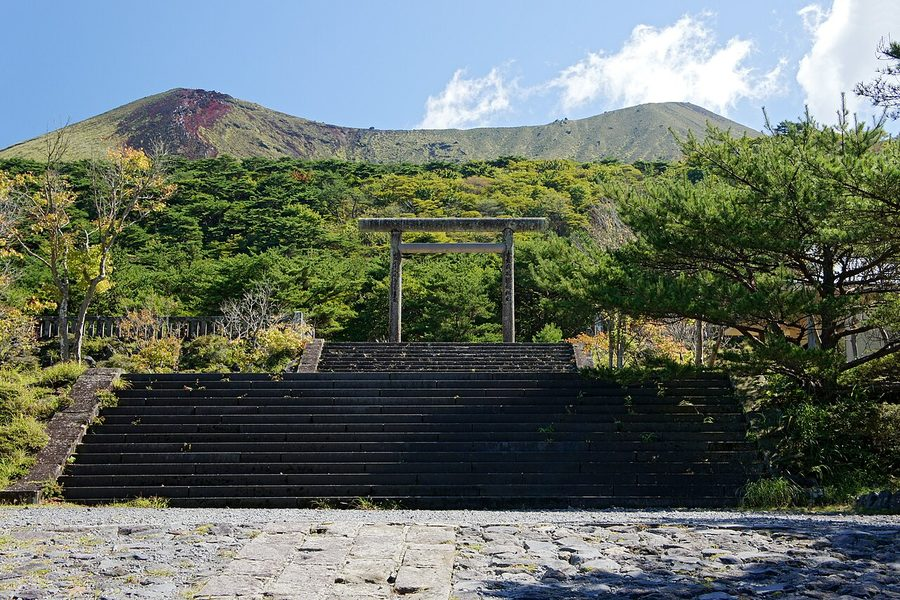
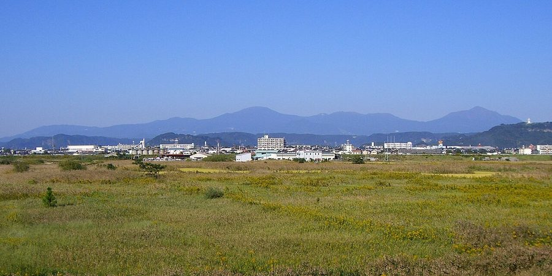

鹿児島県霧島市の日帰り温泉・銭湯・サウナ（88件）
寄り道スポット検索アプリ「ヨッテコ」の収録データから、鹿児島県霧島市の日帰り温泉・銭湯・サウナを営業時間・料金つきで一覧にしました（2026年8月時点）。
最も安いのは福寿温泉（100円）。最も遅くまで入れるのは癒やしの湯 昇龍温泉（翌2:00まで）。朝風呂なら癒やしの湯 昇龍温泉（5:00開店）。
鹿児島県霧島市はどんなまち？
数字で見る🔍鹿児島県霧島市
まちの横顔




- 地形と気候: 日本百名山の霧島山をはじめ、高千穂峰・新燃岳・韓国岳などの山々を抱え、日本初の国立公園の1つである霧島錦江湾国立公園が広がるまちです。国分地区の2004年データでは、平均気温18.4℃、年間降水量2,069mmでした。
- 観光: 日本百名山の霧島山や鹿児島神宮の初午祭、霧島温泉郷・日当山温泉・妙見温泉などの温泉で知られる観光地です。2010年9月には霧島ジオパークが日本ジオパークに認定されました。
- 特産と文化: 民謡・鹿児島おはら節の歌詞にある「花は霧島 煙草は国分」の「霧島」は当地が原産地とされるキリシマツツジ、「国分」は合併前の国分市を中心に栽培されてきた葉タバコの銘柄を指します。
寄り道充実度（全国偏差値）
偏差値・順位は、ヨッテコ収録データ（2026年8月時点・26,033件）を市区町村別に集計した施設数の全国分布（1,728市区町村）から毎回算出しています。カードを押すとカテゴリ別の分析に切り替わります。
日帰り温泉から見た鹿児島県霧島市
市内の日帰り温泉は88件、全国11位（上位0.6%）。——数のうえでは、はっきり湯の多いまち。
- 93%の店が天然温泉です。全国水準は67%です。霧島温泉郷や日当山温泉、妙見温泉などの温泉で知られ、霧島ジオパークが日本ジオパークに認定された市。93%が天然温泉という構成は、地下から湧くものの豊かさを映しています。
- 34%——サウナの併設率は、全国の52%に届きません。主役はあくまで湯船、という構成でしょうか。
- 21時を過ぎて入れる店は33%。全国水準（40%）より少なめです。明るいうちに入って早く休む、という時間割が見えてきます。
- 入浴料の中央値は425円でした（判明74件）。全国の650円より35%低い水準です。気軽に立ち寄れる金額に収まっています。
出典: 施設データ=ヨッテコ収録データ（26,033件・2026年8月時点）。偏差値・全国順位・全国水準は全1,728市区町村の分布から毎回算出。 / 人口=総務省「住民基本台帳に基づく人口、人口動態及び世帯数」（2026年1月1日現在） / 面積=国土地理院「全国都道府県市区町村別面積調」（2026年4月1日時点） / 森林率=農林水産省「2025年農林業センサス（農山村地域調査）」市区町村別林野率（2025年、林野率（林野面積÷総土地面積）） / 年平均気温=気象庁「平年値（1991-2020年）」。市区町村の代表点（国土交通省「大字・町丁目レベル位置参照情報」）から最も近い観測点の値 / 写真=Wikimedia Commons（各キャプションに作者・ライセンスを記載）
曜日別の営業施設数
| 月 | 火 | 水 | 木 | 金 | 土 | 日 |
|---|---|---|---|---|---|---|
| 83 | 77 | 82 | 83 | 87 | 87 | 86 |
火曜日が最も休みが多く（各11件が定休）、年中無休は67件です。※営業時間データのある88件で集計
入浴料金の分布（大人）
| 500円以下 | 44件 | |
| 501〜800円 | 7件 | |
| 801〜1,200円 | 6件 | |
| 1,201円以上 | 17件 |
料金が確認できた74件で集計。
施設一覧
| 施設 | 営業時間 | 料金（大人） |
|---|---|---|
| Sauna＆Food＆Guesthouse おやっとサウナ サウナ プライベートサウナ、ゲストハウス、飲食スペースを備えた複合施設。霧島の地下水を用いた深さ110cmの水風呂、セルフロウリ… | 08:00〜23:30 | 3,500円 |
| cafe&spa chest カフェ＆スパ！チェスト 天然温泉 霧島初のカフェと貸切温泉が同時に楽しめるお店。キャンプ場から徒歩約10分で、アウトドア愛好家に人気。大正の装飾で古き良き… | 11:30〜22:00 | 500円 |
| sumu sauna サウナ 鹿児島県霧島市の完全貸切プライベートサウナ。バレルサウナで杉の香りに包まれる体験。 | 10:00〜22:00 | — |
| いやしの湯 家族温泉 山翠 天然温泉露天風呂サウナ 霧島市の家族湯専門施設。全11室が離れ。各部屋に内風呂・露天風呂・サウナ・水風呂を完備。古民家の趣きを活かした高級感のあ… | 10:00〜25:00 | 2,700円 |
| おりはし旅館 別館 山水荘 天然温泉露天風呂 妙見温泉発祥の湯とされる歴史ある旅館。別館「山水荘」にある自噴のキズ湯（ぬる湯）が特徴で、当館にのみ湧く温泉。春の桜・秋… | 10:00〜15:00 ※曜日により異なる | 500円 |
| かれい川温泉 天然温泉露天風呂 | 10:00〜20:00（水休） | 350円 |
| さかいだ温泉 天然温泉サウナ さかいだ温泉は、ラムネ湯と呼ばれる炭酸水素塩泉の掛け流し。木製の浴槽に勢いよく注ぐお湯が特徴です。 | 10:00〜20:00 | 300円 |
| しゅじゅどん温泉 天然温泉 藩政時代日当山の地頭だった「侏儒どん」が名前の由来の大衆浴場。効能は神経痛やリウマチなど多岐にわたる。 | 10:00〜20:00 | 3,000円 |
| つばき湯 天然温泉サウナ 隼人姫城の温泉で、源泉かけ流しの無色透明の湯。二つの浴槽があり、一つは水風呂。 | 10:00〜22:00（火休） | 390円 |
| ほたる温泉 天然温泉 | 13:00〜20:30 | 150円 |
| みょうばん湯 天然温泉露天風呂 清掃の行き届いた内湯と手造りの露天風呂が特徴。温泉の成分で床が赤褐色になった趣深い浴場で、自然の中での入浴が楽しめる。 | 00:00〜24:00 | — |
| エル・エール 天降川・住吉温泉 天然温泉サウナ | 14:00〜20:00（火・水・木休） | 420円 |
| サウナ24宝乃湯 サウナ | 16:00〜24:00（月・日休） | — |
| ザ・パルス霧島 天然温泉露天風呂サウナ 霧島神宮温泉郷の泉質を活かした大浴場。源泉かけ流しの露天風呂とサウナを備え、貸切風呂も4室完備。 | 15:00〜24:00 | 1,650円 |
| シティホテルイン国分 城山温泉センター 天然温泉サウナ 地下1200メートルから湧き出つ天然掛流し温泉。塩化物泉で、豊かに湧き出るお湯に肩までつかれる。 | 14:00〜23:00 | 460円 |
| ビジネスホテル舞鶴館 サウナ 霧島麓の駅前ビジネスホテル。リニューアルに伴いサウナを新設。宿泊客以外も利用可能 | 17:00〜22:00 | 500円 |
| プライベートサウナ 閃閃 sensen サウナ | 08:00〜16:00（火休） | — |
| ホテル京セラ 天然温泉サウナ ホテル京セラ直下1,050mの源泉を利用した温泉大浴場。循環式で、泉温46.5度の塩化物泉。室内温水プール・スポーツジム… | 08:00〜20:00 | 2,000円 |
| ホテル霧島キャッスル 天然温泉露天風呂サウナ 霧島温泉郷で独自の源泉を保有。露天風呂は緑濃い森に囲まれた情緒ある風情。 | 15:30〜19:00 | 850円 |
| ラムネ温泉 仙寿の里 天然温泉露天風呂 飲泉許可も取得している炭酸水素塩泉（ラムネ温泉）が自慢。濃度が濃い温泉で源泉成分の結晶が浴槽に付着するほど。 | 10:00〜20:00 | 300円 |
| 一茶温泉 天然温泉 | 10:00〜20:00（火休） | 300円 |
| 保養温泉 京湯 天然温泉 霧島市国分の昔ながらの番台跡がある秘湯的温泉。ナトリウム炭酸水素塩泉で美容液のような湯が特徴。オウム「ルリカちゃん」がお… | 06:30〜21:00 | — |
| 前田温泉 天然温泉 | 09:00〜21:30 | 200円 |
| 前田温泉 カジロが湯 天然温泉露天風呂サウナ | 09:00〜20:00（木休） | 430円 |
| 千石温泉 天然温泉 隼人姫城の住宅街の中にある源泉かけ流し温泉。浴室は仕切られており、熱めとぬるめが楽しめる。二階には宿泊施設もある。 | 06:00〜22:00 | 150円 |
| 古民家村 家族湯 天空 霧島店 天然温泉露天風呂サウナ 霧島市国分の古民家村形式の家族湯。全11室が離れで、各部屋に露天風呂付き。レトロで高級感のある大正時代の建具をリユース。 | 10:00〜24:00 | 2,700円 |
| 国民宿舎 霧島新燃荘 天然温泉露天風呂 霧島屋久国立公園内の山のふもとにあり、登山に便利な温泉施設です。混浴露天風呂と女性専用露天風呂があります。 | 08:00〜18:00（火休） | — |
| 塩浸温泉龍馬公園 龍馬とお龍の湯 天然温泉 坂本龍馬が新婚旅行で訪れた塩浸温泉公園。龍馬資料館・龍馬とお龍の縁結びの足湯・龍馬が入ったとされる湯舟を備える。 | 09:00〜18:00（月休） | 300円 |
| 天然温泉旅館 繁花荘せせらぎ 天然温泉露天風呂 | 12:00〜14:30 | — |
| 妙見温泉 ねむ 天然温泉 妙見温泉随一の広さを誇る大浴場。美人の湯として知られ、メタケイ酸を含むアルカリ性温泉で肌の保湿効果抜群。最新の熱交換シス… | 10:00〜14:00 | 1,000円 |
| 妙見温泉 楽園荘 天然温泉 川のせせらぎと野鳥のさえずりに包まれた湯治宿。暮らすように泊まる「湯治」という古くて新しい温泉スタイルが特徴。 | 10:00〜19:00 | — |
| 妙見温泉 秀水湯 天然温泉 | 08:30〜20:00 | 200円 |
| 妙見田中会館 天然温泉露天風呂 霧島市妙見温泉の100%源泉かけ流しの掛け流し温泉を提供する旅館。天降川渓谷に位置し、大浴場と貸切露天風呂で自社専用源泉… | 11:00〜15:00 | — |
| 妙見石原荘 天然温泉露天風呂サウナ 源泉かけ流しの温泉でリフレッシュ後、季節を味わうお食事で特別な時間を過ごせる。 | 11:30〜15:00 | 4,000円 |
| 安楽温泉 朱峰 天然温泉露天風呂 | 13:00〜17:00 | 500円 |
| 安楽温泉 鶴乃湯 天然温泉露天風呂 安楽温泉の一つで、天降川のせせらぎと緑を眺めながら入浴できる。打たせ湯が気持ちよいと好評の地元密着型温泉。 | 08:00〜20:30（水休） | 400円 |
| 家族温泉 木の花 天然温泉露天風呂 鹿児島県内で最も古い歴史の日当山温泉を活かした家族湯。美肌効果のあるナトリウム-炭酸水素塩のお湯が肌の角質や汚れを取り、… | 10:00〜23:00 | 1,700円 |
| 家族温泉絵巻 ゆごや物語 天然温泉露天風呂サウナ | 10:30〜23:30 | 2,200円 |
| 家族湯 季一湯（ときいちゆ） 天然温泉露天風呂 霧島市隼人町の新型貸切家族湯。全室に内湯と露天風呂を備え、源泉100％掛け流し。 | 13:00〜24:00 | 2,000円 |
| 家族湯 新天降川温泉 天然温泉 | 00:00〜24:00 | 300円 |
| 家族湯 清武温泉 天然温泉 | 09:00〜23:00 | 400円 |
| 家族湯すえひろ 天然温泉 日当山温泉郷の街中にある赤い入り口が目印の家族湯。美人の湯として知られており、ペット用温泉シャワー室も併設。 | 07:00〜21:30 | 300円 |
| 家族湯一番えにし 天然温泉露天風呂 日当山温泉郷にある2室のみの貸切家族湯。全室バリアフリー設計で、日本神話をテーマとした特色ある部屋が特徴。 | 10:30〜23:30 | 2,700円 |
| 家族風呂 重久温泉 天然温泉 | 10:00〜21:30 | 300円 |
| 富士の湯 天然温泉露天風呂 | 14:00〜19:50 | 300円 |
| 山野温泉 天然温泉 日当山温泉郷のオレンジ色の屋根が目印の温泉。昔ながらのタイル張り浴場で、二つに別れた湯船（奥は熱め、手前は適温）で源泉が… | 14:30〜20:00 | 250円 |
| 岩戸温泉 天然温泉露天風呂 鹿児島霧島市国分地区の温泉施設『岩戸温泉』。大浴場と貸切湯を備えた施設。ゴルフ場も併設。 | 06:30〜22:00 | 400円 |
| 弘寿温泉 天然温泉サウナ | 10:00〜21:00 | 200円 |
| 心の湯 天然温泉サウナ 霧島の自然に包まれた源泉かけ流しの温泉施設。毎日お湯を入れ替え常に新鮮なお湯が流れます。大浴場とサウナ、ひのき風呂を完備… | 09:00〜22:00（月休） | 700円 |
| 忘れの里 雅叙苑 天然温泉 茅葺屋根の古民家を移築した宿で、巨大な一枚岩をくり抜いた温泉風呂が特徴。日本の原風景に浴しながら、薩摩の郷土料理を味わえ… | 12:00〜21:00 | — |
| 数寄の宿 野鶴亭 天然温泉露天風呂サウナ 西郷隆盛や坂本龍馬も愛した日当山温泉の数寄屋造り高級旅館。800年の歴史を持つ「野鶴の湯」の源泉掛け流し温泉が自慢。 | 12:00〜21:00 | 2,500円 |
| 旅行人山荘 天然温泉露天風呂 丸尾温泉の歴史ある温泉地にある。4つの貸切露天風呂（赤松の湯、もみじの湯、ひのきの湯、鹿の湯）が特徴。 | 12:00〜15:00 | 1,200円 |
| 日の出温泉 きのこの里 天然温泉 霧島温泉の立ち寄り温泉と喫茶。自噴源泉の掛け流しで、あつ湯とぬる湯がある。天降川の景色を眺めながら入浴できる。 | 10:00〜20:00（火休） | 300円 |
| 日当山温泉 花の湯 天然温泉露天風呂サウナ | 09:00〜21:00 | 520円 |
| 日当山温泉センター 天然温泉 日当山温泉センターは立ち寄り入浴施設です。 | 08:00〜22:00 | 300円 |
| 横川温泉 天然温泉 | 07:00〜21:00（月休） | 200円 |
| 横瀬温泉共同浴場 天然温泉 | 08:00〜21:00 | 300円 |
| 民宿 きりしま路 天然温泉 民宿きりしま路は霧島神宮の大鳥居をくぐってすぐの立地。掛け流しの単純硫黄泉が肌をスベスベにします。 | 15:00〜16:40 | 400円 |
| 民宿 登山口温泉 天然温泉 民宿登山口温泉は霧島神宮そばの立地。霧島の自然を満喫しながら、地元素材を使った料理が楽しめます。 | 10:00〜20:00 | — |
| 浜之市ふれあいセンター 富の湯 天然温泉サウナ 平成14年のオープン以来、市民の憩いの場となっている温泉施設です。大浴場には遠赤外線サウナ室も備えています。 | 09:00〜22:00 | 420円 |
| 温泉カフェ 湯らり〜な やまのゆ 川音 天然温泉露天風呂 | 10:00〜21:00（火休） | 300円 |
| 湯けむりとにごり湯の宿 霧島国際ホテル 天然温泉露天風呂サウナ 霧島温泉郷の国際ホテル。源泉かけ流しの10種類以上の風呂を完備。露天風呂では四季の自然を感じながら、湯けむりの中でくつろ… | 11:00〜15:00 | 1,200円 |
| 湯之谷山荘 天然温泉露天風呂 霧島湯之谷温泉の湯治場。5本の自家源泉から毎分480リットルが湧出。加水・加熱なしの完全掛け流し。 | 10:00〜14:00 | 500円 |
| 湯治の宿 妙見館 天然温泉 江戸時代に発見された妙見温泉の湯治の宿。毎分300リットルの豊富な自家源泉をかけ流しで提供し、古来から湯治場として長く愛… | 09:00〜18:00 | 3,000円 |
| 湯治の宿 田島本館 天然温泉 妙見温泉の発祥地。約170年の歴史を持つ湯治宿。三種の湯（神経痛の湯/きず湯/胃腸湯）が特徴。 | 08:30〜19:00 | 300円 |
| 溝辺ふれあい温泉センター 天然温泉サウナ 霧島市溝辺の福祉温泉施設。大浴場にジェット浴・気泡浴・低周波浴・サウナなど充実した設備があり、身障者対応の家族湯も完備。 | 07:00〜21:00（火休） | 650円 |
| 犬飼温泉公衆浴場 天然温泉 | 15:00〜20:00 | — |
| 癒やしの湯 昇龍温泉 天然温泉 | 05:00〜26:00 | 360円 |
| 硫黄谷温泉 霧島ホテル 天然温泉露天風呂サウナ 硫黄谷温泉を源泉とする14の湯源から、硫黄泉・明礬泉・塩類泉・鉄泉の4種類の温泉が楽しめる。 | 11:00〜17:00 | 1,500円 |
| 祝橋温泉旅館 天然温泉 | 06:00〜21:00 | 300円 |
| 福寿温泉 天然温泉 | 09:00〜20:00 | 100円 |
| 素泊まりの宿 きらく温泉 天然温泉露天風呂 源泉かけ流しの天然温泉で旅の疲れを癒せる。湯治にも利用できる良質な温泉が特徴。 | 11:00〜19:00 | — |
| 西郷どん湯温泉 天然温泉 西郷どん湯温泉は、古くから近郷の住民に内湯として親しまれている温泉。西郷隆盛がこの地を訪れた度に愛した由。 | 06:00〜21:00 | 250円 |
| 貸切湯 かれい川の湯 天然温泉露天風呂 天降川のほとりにたたずむ貸切温泉。周辺になにもない素朴な温泉で、贅沢な時間が楽しめる。 | 10:00〜23:00（木休） | 1,000円 |
| 関平温泉 天然温泉露天風呂 | 09:00〜20:00 | 380円 |
| 霧島みやまホテル 天然温泉露天風呂 霧島温泉郷で人気の貸切風呂・家族湯の宿。内湯2箇所、露天風呂3箇所の全5箇所の湯船は完全貸切でプライベート時間を満喫でき… | 11:00〜20:00 | 800円 |
| 霧島国立公園 いで湯の宿 花紫 天然温泉露天風呂 霧島連山の美しい火口湖の名を冠した4つの源泉かけ流し湯殿を備える宿。全て貸し切りで、他人を気にせず自然の息吹を感じながら… | 11:00〜14:00 | — |
| 霧島国際ホテル 砂むし温泉 霧砂（きりすな） 天然温泉露天風呂 霧島市初の砂むし温泉を2026年6月1日にオープン。指宿とは異なるシリカ砂を使用し、露天風呂『白紫乃湯』も復活。 | 10:00〜22:00 | 2,500円 |
| 霧島天然泥湯の宿 さくらさくら温泉 天然温泉露天風呂 全国的に珍しい天然泥湯の宿。硫黄成分豊富な天然泥をパックとして使用でき、お肌がなめらかになる。男性用「殿様湯」と女性用「… | 11:00〜20:00 | 800円 |
| 霧島市 横川健康温泉センター 天然温泉サウナ 霧島市が運営する健康増進温泉センター。7種類の風呂が楽しめる大浴場と、4室の家族湯が完備。トレーニングルームや多目的ホー… | 07:00〜21:00（火休） | 3,800円 |
| 霧島市温泉健康増進交流センター 神乃湯 天然温泉サウナ | 10:00〜21:00 | 750円 |
| 霧島温泉 旅の湯 天然温泉露天風呂サウナ | 09:00〜21:00 | 600円 |
| 霧島神宮温泉 あかまつ荘 天然温泉 霧島神宮の目の前に位置し、トレッキングや観光に便利な立地。24時間かけ流しで源泉100%の温泉が特徴。 | 10:00〜20:00 | 400円 |
| 霧島緑の村 天然温泉 キャンプ場施設、温泉あり | 09:00〜18:00 | 260円 |
| 霧島観光ホテル 天然温泉サウナ 桜島を望む霧島唯一の展望大浴場とかけ流しの温泉が自慢。露天風呂や4室の貸切風呂でさまざまな泉質を楽しめる。 | 12:00〜16:00 | 1,000円 |
| 霧島隠れ家の宿 優湯庵・霧島美人の湯 You湯 天然温泉露天風呂 源泉100%かけ流し（加水・加温なし）の美人の湯。岩と緑に囲まれた露天風呂が特徴。 | 10:00〜24:00 | 350円 |
| 霧島高原国民休養地 シンフォニースパ 天然温泉露天風呂 | 09:00〜20:00（水休） | 380円 |
| 麹・発酵ホテル サウナ | 12:00〜20:00（水休） | 2,000円 |